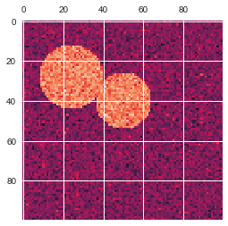
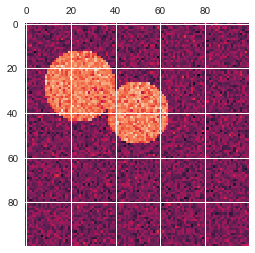
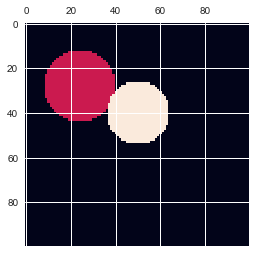

Clustering- Spectral
These codes are imported from Scikit-Learn python package for learning purpose
import matplotlib.pyplot as plt import numpy as np import seaborn as sns %matplotlib inline sns.set()
12. Spectral clustering for image segmentation
In this example, an image with connected circles is generated and spectral clustering is used to separate the circles.
In these settings, the :ref:spectral_clustering approach solves the problem
know as 'normalized graph cuts': the image is seen as a graph of
connected voxels, and the spectral clustering algorithm amounts to
choosing graph cuts defining regions while minimizing the ratio of the
gradient along the cut, and the volume of the region.
As the algorithm tries to balance the volume (ie balance the region sizes), if we take circles with different sizes, the segmentation fails.
In addition, as there is no useful information in the intensity of the image, or its gradient, we choose to perform the spectral clustering on a graph that is only weakly informed by the gradient. This is close to performing a Voronoi partition of the graph.
In addition, we use the mask of the objects to restrict the graph to the outline of the objects. In this example, we are interested in separating the objects one from the other, and not from the background.
- Authors: Emmanuelle Gouillart emmanuelle.gouillart@normalesup.org Gael Varoquaux gael.varoquaux@normalesup.org
- License: BSD 3 clause
from sklearn.feature_extraction import image from sklearn.cluster import spectral_clustering
Data
l = 100 x, y = np.indices((l, l)) center1 = (28, 24) center2 = (40, 50) center3 = (67, 58) center4 = (24, 70) radius1, radius2, radius3, radius4 = 16, 14, 15, 14 circle1 = (x - center1[0]) ** 2 + (y - center1[1]) ** 2 < radius1 ** 2 circle2 = (x - center2[0]) ** 2 + (y - center2[1]) ** 2 < radius2 ** 2 circle3 = (x - center3[0]) ** 2 + (y - center3[1]) ** 2 < radius3 ** 2 circle4 = (x - center4[0]) ** 2 + (y - center4[1]) ** 2 < radius4 ** 2 # 4 circles img = circle1 + circle2 + circle3 + circle4
Create Gradients
# We use a mask that limits to the foreground: the problem that we are # interested in here is not separating the objects from the background, # but separating them one from the other. mask = img.astype(bool) img = img.astype(float) img += 1 + 0.2 * np.random.randn(*img.shape) # Convert the image into a graph with the value of the gradient on the # edges. graph = image.img_to_graph(img, mask=mask) # Take a decreasing function of the gradient: we take it weakly # dependent from the gradient the segmentation is close to a voronoi graph.data = np.exp(-graph.data / graph.data.std())
Spectral clustering
# Force the solver to be arpack, since amg is numerically # unstable on this example labels = spectral_clustering(graph, n_clusters=4, eigen_solver='arpack') label_im = -np.ones(mask.shape) label_im[mask] = labels
Results
plt.figure(figsize = [12,10]) plt.matshow(img) plt.matshow(label_im) # 2 circles img = circle1 + circle2 mask = img.astype(bool) img = img.astype(float) img += 1 + 0.2 * np.random.randn(*img.shape) graph = image.img_to_graph(img, mask=mask) graph.data = np.exp(-graph.data / graph.data.std()) labels = spectral_clustering(graph, n_clusters=2, eigen_solver='arpack') label_im = -np.ones(mask.shape) label_im[mask] = labels plt.matshow(img) plt.matshow(label_im) plt.show()
<matplotlib.figure.Figure at 0x7f1b70534668>


